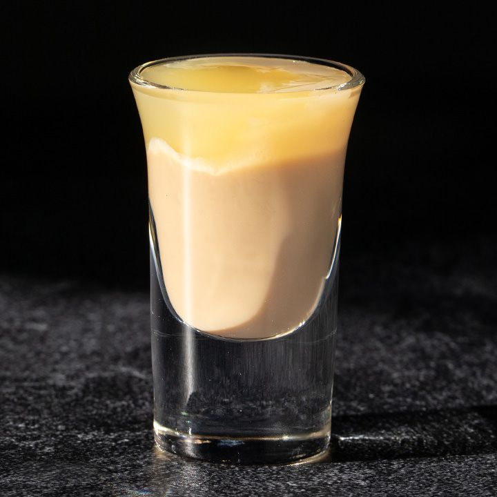

Cement Mixer

Ingredients
- 1 1/2 oz. of Irish Creme Liqueur
- 1/2 oz. Lime Juice
Instructions
- Gather the ingredients.
- Pour the Irish Creme Liqueur into a large shot glass.
- Slowly float the Lime Juice on top.
- When you're ready to drink, take the shot and hold it in your mouth.
- Shake your head very fast, then swallow.
- You just turned your mouth into a cement mixer!